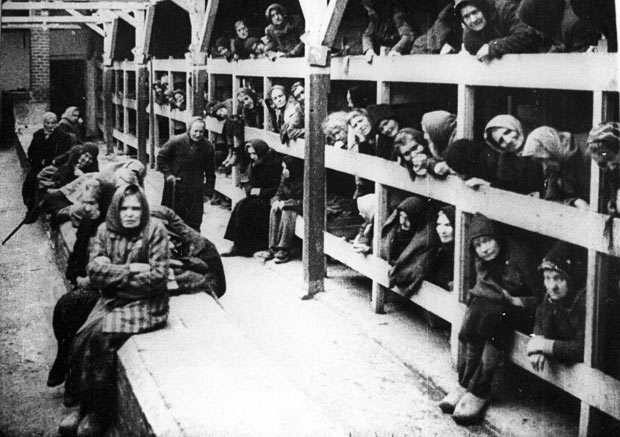

Command and Control
Camp guards were members of the SS-Totenkopfverbände (Death's Head Units). Around 7,000 SS personnel in total were posted to Auschwitz during the war. Of
these, 4 percent of SS personnel were officers and 26 percent were non-commissioned officers, while the remainder were rank-and-file members. Approximately three
in four SS personnel worked in security. Others worked in the medical or political departments, in the camp headquarters, or in the economic administration, which was
responsible for the property of dead prisoners. SS personnel at the camp included 200 women, who worked as guards, nurses, or messengers. The overall command
authority for the entire camp was Department D (the Concentration Camps Inspectorate) of the SS-Wirtschafts-Verwaltungshauptamt (SS Economics Main Office; SS-WVHA)
Auschwitz was considered a comfortable posting by many SS members, due to its many amenities and the abundance of slave labor. Of the various prisoner groups,
SS officers preferred Jehovah's Witnesses for household slaves because of their nonviolent behavior. Höss lived with his wife and children in a villa just outside
the camp grounds. Other SS personnel were also initially allowed to bring fiancees, wives, and children to live at the camp, but when the SS camp grew more crowded, Höss
restricted further arrivals. Facilities for the SS personnel and their families included a library, swimming pool, coffee house, and a theater that hosted regular
performances.

Some prisoners—usually Aryan—were assigned positions of authority, such as Blockschreiber ("block clerk"), Funktionshäftling ("functionary"), Kapo ("head" or "overseer"),
and Stubendienst ("barracks orderly"). They were considered members of the camp elite, and had better food and lodgings than the other prisoners. The Kapos in particular
wielded tremendous power over other prisoners, whom they often abused. Very few Kapos were prosecuted after the war, due to the difficulty in determining which
Kapo atrocities had been performed under SS orders and which had been individual actions.
About 120 SS personnel were assigned to the gas chambers and lived on site at the crematoria. Several SS personnel oversaw the killings at each gas chamber, while
the bulk of the work was done by the mostly Jewish prisoners known as Sonderkommandos (special squads). Sonderkommando responsibilities included guiding victims
to the gas chambers and removing, looting, and cremating the corpses.
The Sonderkommando were housed separately from other prisoners, in somewhat better conditions. Their quality of life was further improved by access to the goods taken
from murdered prisoners, which Sonderkommandos were sometimes able to steal for themselves and to trade on Auschwitz's black market. Hungarian doctor Miklós Nyiszli
reported that the Sonderkommando numbered around 860 prisoners when the Hungarian Jews were being killed in 1944. Many Sonderkommandos committed suicide due to the
horrors of their work; those who did not generally were shot by the SS in a matter of weeks, and new Sonderkommando units were then formed from incoming transports.
Almost none of the 2,000 prisoners placed in these units survived to the camp's liberation.